Gestante, 27 anos de idade, G3 P2 (vaginais), 37 semanas de gestação, queixa-se de contrações e bolsa rota há quatro horas. Informa uso de aciclovir há sete dias para lesões que surgiram na vagina. Ao exame físico: estado geral preservado, exame obstétrico, observa-se altura uterina 35 cm, FCF 140 bpm, contrações presentes e fortes, presença de lesões perineais dolorosas conforme apresentado na imagem; toque: apresentação cefálica, colo dilatado para 6 cm, no, bolsa rota e saída de líquido claro. Nesse caso, para o cuidado adequado, a via de parto indicada e a justificativa para essa via são, respectivamente:
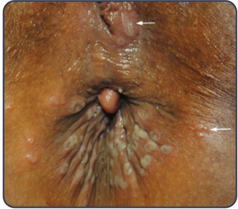
Gestante assintomática, com 32 semanas de gestação, tipo sanguíneo AB Rh negativo, Coombs indireto positivo, apresenta dopplervelocimetria de acordo com a imagem. Nesse caso, com base nos valores da tabela apresentada, para o melhor resultado materno e fetal, a conduta adequada é:
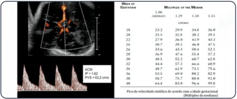
A tabela a seguir apresenta os resultados da metanálise de Rossi & Prefumo (2018), que compara os desfechos maternos e perinatais entre os partos planejados domiciliares e os hospitalares. A partir dos dados apresentados, conclui-se que, quando comparados aos partos hospitalares, os partos domiciliares têm:
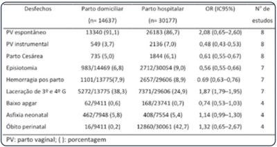
Primigesta, 25 semanas de gestação, apresenta exame de ecocardiogra a fetal em que foi detectada uma malformação isolada, conforme demonstrado na imagem a seguir.
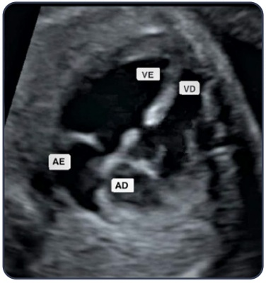
Mulher, 21 anos de idade, inicia o pré-natal no primeiro trimestre da gestação e relata ser portadora de de ciência de proteína S da coagulação. Apresenta antecedente familiar (pai) com episódios de tromboembolismo por de ciência de proteína S. Nega história pessoal de tromboembolismo. A tromboprofilaxia dessa paciente deve ser realizada:
Puérpera, 27 anos de idade, G3 P3, pós-parto vaginal há 15 minutos, apresenta sangramento vaginal aumentado. Ao exame, FC: 120 bpm, PA: 90 x 60 mmHg, pálida, abdome ácido, útero hipotônico, sangramento vaginal moderado. Com base nas informações apresentadas, qual é o índice de choque dessa paciente e qual seu significado, respectivamente?
Gestante, hipertensa crônica há 10 anos, chega em unidade de atenção primária à saúde para sua primeira consulta de pré- natal. Em uso de dois anti-hipertensivos, sendo que um deles deve ser suspenso, pois tem seu uso contraindicado durante a gestação. Nesse quadro, o anti-hipertensivo que deve ser suspenso é:
Primigesta, 33 semanas de gestação, refere prurido intenso, especialmente em região de dobras, que piora à noite, acompanhado de discreto escurecimento da cor da urina que, segundo a paciente, está “parecendo coca-cola”. Nega outros sintomas. Ao exame dermatológico, as lesões encontradas são apenas de escoriações de coçaduras. Nesse caso, o diagnóstico e as condutas clínica e obstétrica adequadas, respectivamente, são:
Gestante, 42 anos de idade, G3 P2, 14 semanas, comparece para consulta de pré-natal. Relata histórico de pré-eclâmpsia, por volta de 32 semanas, nas duas gestações anteriores (os dois lhos são vivos). Paciente questiona se é possível evitar a pré-eclâmpsia na gravidez atual. Nesse caso, para prevenção da pré-eclâmpsia, a conduta adequada é prescrever uso diário de:
Gestante, 30 anos de idade; em exame de ultrassonogra a morfológica de primeiro trimestre (12 semanas), foram evidenciadas as imagens apresentadas a seguir. O rastreamento bioquímico apresentou como resultado: fração livre do beta-hCG aumentada e PAPP-A diminuído. Nesse caso, a principal hipótese de comprometimento fetal e investigação definitiva são, respectivamente:
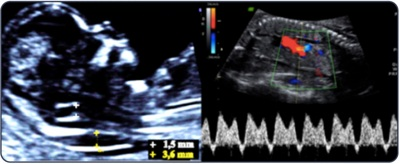
Gestante, 32 anos de idade, 2G 1P (parto vaginal há 10 anos), 35 semanas de gestação, apresentação fetal conforme a imagem, feto vivo, informa que deseja parto por via vaginal, pois não apresenta contraindicações maternas. Nega comorbidades. O feto apresenta crescimento e desenvolvimento normais.
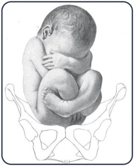
A cardiopatia que possui indicação absoluta de cesárea é
Gestante de 32 semanas refere sonolência, di culdade de concentração e cefaleia. O hemograma revela: hemoglobina 10 g/dl; volume corpuscular médio 70 fL, ferritina sérica 11 ng/mL; leucócitos 11.000/mL; plaquetas 273.000/mm3. A microscopia está demonstrada na imagem a seguir. Nesse caso, o tipo de anemia e o tratamento adequado, respectivamente, são:
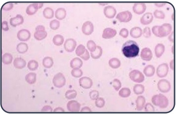
Primigesta, 29 anos de idade, 10 semanas de gestação, refere epilepsia desde a infância. Fazia uso de lamotrigina, com controle da doença. Entretanto, desde que soube estar grávida, suspendeu a medicação. Procura pronto atendimento pois teve dois episódios convulsivos nas últimas 24 horas. Exame físico: estado geral preservado, sinais vitais normais e BCF presentes. Para o cuidado adequado dessa gestante, a orientação quanto à terapêutica medicamentosa para epilepsia deve ser:
Mulher, 35 anos de idade, G5 P3 (3 cesáreas) A1, queixa-se de dor em hipogástrio e atraso menstrual de sete semanas. Exame físico geral sem alterações. Exame ginecológico demonstra abdome pouco doloroso em hipogástrio e descompressão brusca negativa; exame especular: discreto sangramento proveniente do colo uterino; toque vaginal: útero amolecido, colo impérvio e anexos sem alterações. Dosagem de beta-hCG: 4.500 mUI/mL e ultrassom conforme a imagem a seguir. Nesse caso, o tipo de gestação ectópica e a conduta adequada, respectivamente, são:
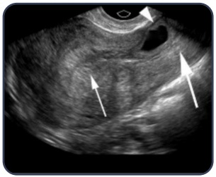
Primigesta, 27 anos de idade, 14 semanas de gestação, foi diagnosticada para HIV no pré-natal. Comparece para a primeira consulta no pré-natal especializado assintomática. ” Para a adequada assistência pré-natal dessa paciente, quanto o cuidado com a infecção pelo HIV, a conduta deve ser:
Nuligesta, diabética tipo 1 há 12 anos, procura seu ginecologista para planejar gravidez. Em uso de bomba de insulina contínua há cinco anos, com boa adaptação, e em acompanhamento com o endocrinologista. Nega vasculopatia. Hemoglobina glicosada (HbA1c) recente de 11,0%. Qual deve ser a orientação para o planejamento da gravidez dessa paciente?
No quinto dia pós-cesárea, puérpera apresenta di culdade na saída do leite, mamilos planos e tensos, mamas dolorosas, com hipertermia discreta, conforme aspecto demonstrado na imagem a seguir: Nesse caso, o diagnóstico e a conduta adequada para o aleitamento materno, respectivamente, são:
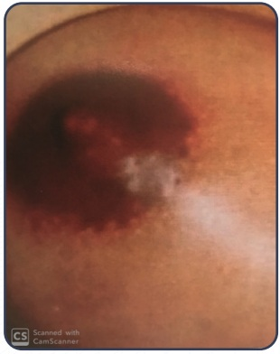
Sobre o uso de antibióticos na cesariana para prevenção de infecção pós-parto, a recomendação da Comissão de Controle de Infecção Hospitalar é realizar:
Gestante, 23 anos de idade, G2 P1 (cesárea há dois anos, lho vivo), 40 semanas e quatro dias de gestação, procura maternidade em trabalho de parto, acompanhada pelo marido. Gestação atual não apresenta intercorrências, feto único e vivo, em apresentação pélvica. Foi indicada a cesariana, e o casal externa desejo de esterilização por ligadura tubária. Após o nascimento do recém-nascido hígido, para atender à solicitação desse casal, a conduta deve ser:
Primigesta, 40 anos de idade, 10 semanas de gestação, é portadora da síndrome de Eisenmenger (hipertensão pulmonar e inversão do shunt atrioventricular). Após aconselhamento por equipe multipro ssional de saúde, deseja interromper a gestação. Nesse caso, para o cuidado adequado da paciente, respeitando os princípios da bioética, a conduta adequada é:
Primigesta, 27 anos de idade, 36 semanas de gestação, portadora de diabetes tipo 1 há 10 anos, relata parada da movimentação fetal há 12 horas. A avaliação pela dopplervelocimetria é normal e o peso fetal estimado está no percentil 70. A hemoglobina glicada há 15 dias é 8,8%. A glicemia capilar, em jejum, hoje, é 62 mg/dL. Avaliação do bem-estar fetal: cardiotocografia, por 40 minutos, conforme a imagem; perfil biofísico fetal de 8. Nesse caso, a conduta adequada é:
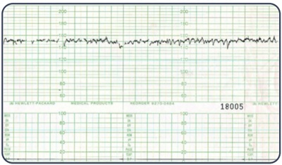
Gestante, 34 anos de idade, primigesta, 20 semanas de gestação, apresenta ultrassonogra a demonstrando crescimento fetal restrito, artéria umbilical única, relação fêmur / circunferência abdominal normal e líquido amniótico em quantidade normal. O exame mais importante para definir o diagnóstico é:
Secundípara, 40 anos de idade, está no puerpério imediato de cesárea por descolamento prematuro de placenta. Tem antecedente de trombose venosa profunda na gestação anterior e IMC de 35 kg/m². Nesse caso, para a adequada pro laxia da doença tromboembólica venosa, a dose e o tempo de uso de heparina de baixo peso molecular, respectivamente, são:
Primigesta, 12 semanas de gestação, apresenta diagnóstico clínico e laboratorial de infecção do trato urinário, cujo agente é sensível a uma grande variedade de antibióticos. Nesse caso, na escolha do antimicrobiano para tratamento adequado, é correto afirmar:
São critérios para definição de caso de near miss materno, segundo a Organização Mundial de Saúde (OMS), as seguintes situações clínicas, laboratoriais ou de manejo durante a gravidez, parto ou puerpério:
Primigesta, 38 anos de idade, assintomática, comparece ao pronto-socorro com exames de ultrassonogra a e resultados de beta hCG realizados com intervalo de 15 dias. O primeiro exame realizado é o que apresenta saco gestacional de 2,3 cm e o segundo, 3,3 cm. Nesse caso, para o adequado cuidado materno, a conduta deve ser:
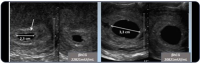
No exame físico de uma gestante no oitavo mês de gravidez, obstetra observa saída de secreção uida esbranquiçada pelos mamilos durante a expressão. Nesse caso, o diagnóstico provável e a conduta para o adequado cuidado materno, respectivamente, são:
Primigesta, 19 anos de idade, 33 semanas de gestação, é atendida em hospital geral, sem maternidade, com queixa de cefaleia persistente e apresenta PA 170 x 110 mmHg. É solicitada a transferência urgente da gestante para maternidade, localizada a 30 minutos de distância. Assinale a alternativa que apresenta as medidas para uma transferência segura.
Puérpera no quarto mês pós-parto normal, amamentação exclusiva, relata tristeza, irritabilidade, choro frequente, cansaço, indisposição e sensação de incapacidade de amamentar e cuidar adequadamente do seu lho. Nesse caso, o diagnóstico e a conduta para o cuidado adequado, respectivamente, são:
Primigesta, 24 semanas de gestação, apresenta dor difusa em abdome superior, cefaleia com alterações visuais, náusea, vômito, exame físico com mucosas hipocoradas e anictéricas, temperatura 38°C, PA 150x90 mmHg. Exames complementares: glicemia 95 mg/dL, TGO 40 UI/L, TGP 55 UI/L, plaquetas 15.000/mm³, Hb 7,1 g/dL, esquizócitos 5%, LDH 1.850 UI/L, creatinina 0,6 mg/dL e relação proteinúria/creatinúria 0,41. Nesse caso, o diagnóstico provável é:
Multípara a termo, sem acompanhamento pré-natal, chegou em fase inicial do trabalho de parto. Apresentou exame de cardiotocografia conforme a imagem a seguir. A partir da análise da imagem, a classificação da cardiotocografia é:
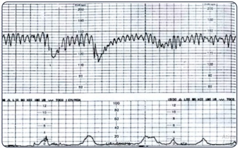
Primigesta, 19 anos de idade, 32 semanas de gestação, diabética do tipo 1, é trazida ao pronto-socorro após convulsão tônico-clônica generalizada, em casa. Ao exame: consciente, lenti cada, PA 140x90 mmHg, Sat O2 99%, altura uterina 30 cm, FCF 144 bpm, dextro 70. Foi administrada dose de ataque do sulfato de magnésio (4 g) e, em seguida, apresentou outra convulsão. No cuidado a essa gestante, o(s) próximo(s) passo(s) na conduta, com relação à crise convulsiva, é (são):
Mulher, 36 anos de idade, G2P1 (Cesárea), 10 semanas de gestação, refere diagnóstico recente de câncer de mama. Apresentou nódulo em mama esquerda, BI-RADS 4, biópsia evidenciou carcinoma ductal invasivo, receptor de estrogênio e progesterona positivo, HER2 positivo, estágio clínico T4bN0M0. Foi submetida à Mastectomia Madden com 9 semanas de gestação. Nesse caso, para o. adequado cuidado materno, a orientação é:
Puérpera, usuária de cocaína, apresenta falta de interesse com o recém-nascido e di culdade de comportamento na transição da gravidez para a maternidade. Esse quadro, além dos aspectos relacionados com a abstinência e o comportamento social, pode ser atribuído à(ao):
Primigesta, 42 anos de idade, gestação pós-fertilização in vitro, 34 semanas de gestação, com curso normal e desenvolvimento fetal apropriado, solicita realização da cesariana com 37 semanas. Visando respeitar a autonomia materna e minimizar os riscos ao feto, a conduta do médico que dará assistência a essa paciente deve ser:
Gestante, 39 anos de idade, 28 semanas de gestação, portadora de hipertensão arterial crônica (metildopa 2 g/d), obesa e tabagista, foi trazida ao pronto atendimento em parada cardiorrespiratória e não foi responsiva às manobras de reanimação. O acompanhamento pré-natal foi adequado, no cartão constava resultado de proteinúria de 24 horas de 80 mg (com 12 semanas) e de 380 mg (com 22 semanas). O laudo de necropsia revelou que a causa do óbito foi acidente vascular cerebral hemorrágico. Nesse caso, a morte materna é classificada como:
Mulher, 42 anos de idade, G3 P2 A0, idade gestacional de 10 semanas, relata sangramento vaginal moderado. Apresenta: beta hCG sérico de 220.000 mUI/mL e ultrassonografia apresentada na imagem a seguir. Para o cuidado adequado dessa paciente, deve-se realizar:
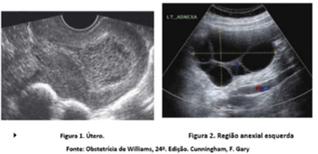
Durante acompanhamento pré-natal, gestante na 22ª semana refere ter diagnóstico de transtorno bipolar, alternando episódios de mania e depressão. Abandonou o tratamento por receio de problemas com o feto. Nesse caso, além de psicoterapia, a conduta adequada para o cuidado materno e fetal é:
Durante a gravidez normal, o trofoblasto placentário sintetiza os hormônios: gonadotro na coriônica humana (hCG), lactogênio placentário humano (hPL), hormônio liberador de corticotro na (CRH), progesterona e estrógenos. A imagem mostra as concentrações séricas de hCG, hPL e CRH na gestação. Sobre a placenta e os hormônios placentários, é correto afirmar:
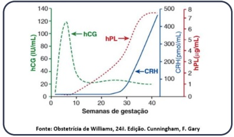
Primigesta, 20 semanas de gestação, refere febre de 39,5°C há seis dias, dor retro-orbital, mialgia e manchas vermelhas no corpo. Exame físico: T 36,4°C, PA 110x60 mmHg, FR 20 ipm, FC 90 bpm, petéquias em abdome, sem outras alterações. Exame obstétrico compatível com a idade gestacional e normal. Nesse caso, após a coleta de sorologia e hemograma, a conduta adequada é:
Primigesta, 39 anos de idade, 37 semanas de gestação, hipertensa crônica em uso de alfa-metildopa 2 g ao dia, sem evidências de lesão de órgão-alvo na avaliação de primeiro trimestre. Refere cefaleia, apresentou ganho de peso de 2 kg em sete dias e, ao exame, PA 170x110 mmHg. Os exames laboratoriais revelaram razão proteinúria / creatininúria de 0,8 e todos os demais exames realizados dentro da normalidade. Cardiotocogra a reativa com movimentação fetal. Nesse caso, além da administração de sulfato de magnésio, para o adequado cuidado dessa gestante, a conduta deve ser:
Gestante de 34 semanas, G2 P1 (parto vaginal), gestação gemelar monocoriônica e diamniótica, queixa-se de contrações há quatro horas. Exame físico: estado geral preservado, FCF: 140 bpm e 152 bpm, dinâmica uterina presente (duas contrações de 40 segundos em 10 minutos), toque: bolsa íntegra, apresentação cefálica, plano zero, colo dilatado para seis cm, esvaecido 50%, medianizado. Peso estimado dos fetos: primeiro feto cefálico: 2.300 g e segundo feto pélvico: 1.900 g. Nesse caso, para a adequada assistência ao parto, a conduta deve ser:
Gestação de 24 semanas, G2 P1 (parto vaginal de 32 semanas), durante a realização do ultrassom morfológico obtém-se a seguinte imagem do colo uterino pela via transvaginal. Nesse caso, o diagnóstico e a conduta adequada, respectivamente, são:
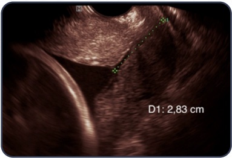
Gestante de 35 semanas, diabetes melito gestacional, na ultrassonogra a, realizada por 30 minutos, apresentou: feto único, peso estimado fetal no percentil 96, índice de líquido amniótico de 28 cm (maior bolsão vertical de 8 cm), quatro movimentos fetais, um episódio de 30 segundos de movimentos respiratórios, um episódio de extensão e exão das pernas; e cardiotocografia por 40 minutos conforme a imagem. Nesse caso, o valor do perfil biofísico fetal clássico é:
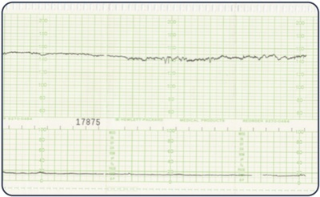
Primigesta, comparece em consulta de pré-natal com 12 semanas de gestação; queixa-se de fezes gordurosas, atulência e náuseas que se iniciaram há cerca de 20 dias, sem prejuízo de suas atividades diárias. Traz resultado de exame protoparasitológico de fezes revelando Giardia lamblia. Para o melhor cuidado dessa gestante, a conduta é:
Gestante de 30 anos de idade, G3 P2 (partos normais), 41 semanas e 1 dia de gestação, sem comorbidades, procura a maternidade pois deseja que o parto seja realizado. Exame físico: bom estado geral, altura uterina de 35 cm, ausência de contrações, ao toque, colo em posição média, consistência média, 2 cm de dilatação, 40% apagado, bolsa íntegra e polo cefálico no plano -3 de De Lee. Avaliação de vitalidade fetal conforme as imagens a seguir. Para o melhor cuidado dessa gestante, a conduta deve ser:
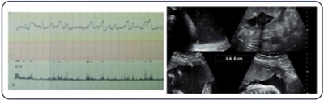
Primigesta, encaminhada ao pré-natal de alto risco para interpretação do resultado de sorologia de toxoplasmose: primeira sorologia com nove semanas de gestação IgM positivo e IgG negativo; segunda sorologia com 14 semanas de gestação IgM positivo e lgG negativo. Está em uso de espiramicina. A interpretação dos exames dessa paciente indica provável:
Na gestação normal, o aumento da resistência periférica à insulina no terceiro trimestre ocasiona:
Primigesta de 18 anos de idade vem à primeira consulta pré-natal relatando 13 semanas e três dias de amenorreia. Uso irregular de anticoncencional oral até DUM. O laudo ecográfico data a gestação em 12 semanas e cinco dias. Assinale a alternativa que aponta, correta e respectivamente, a imagem do parâmetro ecográ co mais preciso para a datação nessa idade gestacional e a necessidade, ou não, de corrigir a idade gestacional. Respostas: 1 12 23 34 45
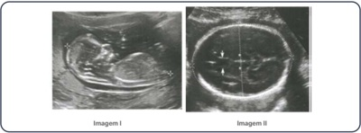
Revisar: possível letra faltando em enunciado